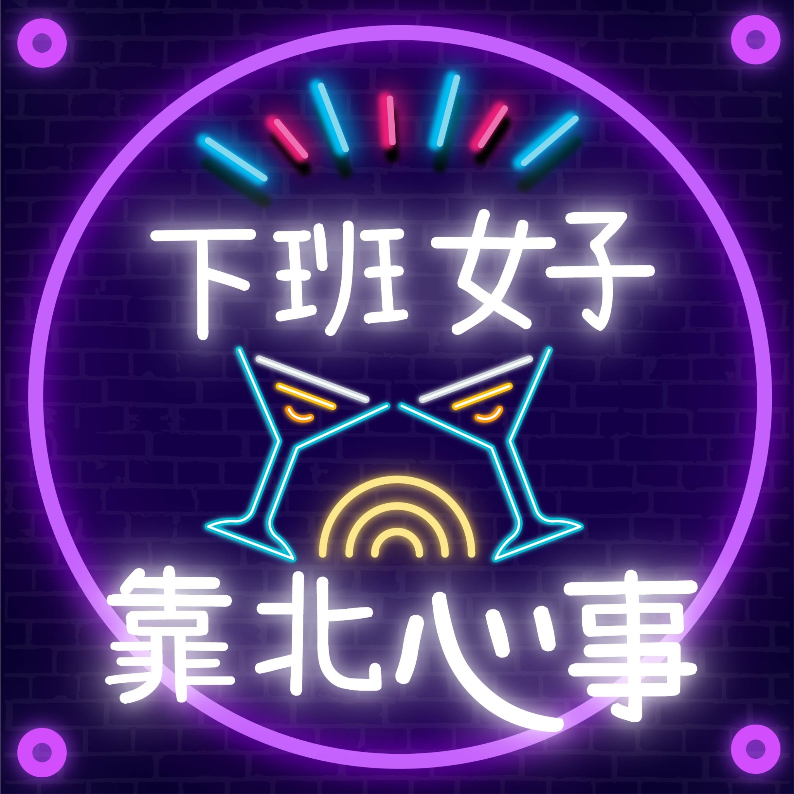

下班了，人生才正要開始靠北。
上班已經夠累了，下班聊點真的。聊職場、感情、旅行，還有人生裡那些不好意思說出口，但大家其實都懂的事。

不只是節目編號，是那些你我都遇過的荒謬時刻。
不想選、不想想，直接進播放清單聽就對了。
想到什麼就寫什麼，不定期更新。點標題展開全文。
旅行、咖啡、吉伊卡哇、奇葩同事，還有一些下班後亂七八糟的人生。
白天做設計、網站、社群，下班錄 Podcast、剪影片、旅行、吃東西，偶爾抱怨人生。
沒有要教你成功。
如果你也覺得「幹，原來不是只有我」，那就好。